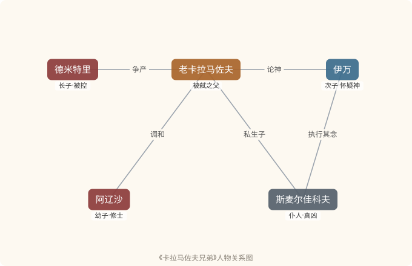

卡拉马佐夫兄弟
一、基本信息
| 作者 | 陀思妥耶夫斯基 |
|---|---|
| 成书/出版 | 1879—1880年连载发表（Britannica：first published as Bratya Karamazovy） The Brothers Karamazov (novel by Dostoyevsky) — Encyclopaedia Britannica（百科全书） |
| 国别/地区 | 俄国 |
| 时代 | 近代 · 19世纪 |
| 体裁 | 长篇小说 |
| 语言 | 俄语 |

《卡拉马佐夫兄弟》人物关系图（人物关系图）
二、创作背景
Britannica（B202）：The novel tells the story of Fyodor Karamazov and his sons Alyosha, Dmitry, and Ivan，围绕一桩弑父案展开（Britannica）。
It is generally regarded as Dostoyevsky's masterpiece（被普遍视为陀思妥耶夫斯基的巅峰之作——Britannica）。
三、内容脉络
老卡拉马佐夫被杀，长子德米特里因情财纠葛受审——真凶另有其人（Britannica 语境+通说）。
伊万的『一切都被允许』与宗教大法官传说——信仰与理性的大辩论（通说；Britannica 确认 search for faith 为核心）。
阿辽沙的圣徒式成长线——修道院与人间之间（通说）。
四、主要人物表
| 人物 | 身份 | 说明 |
|---|---|---|
| 费奥多尔·卡拉马佐夫 | 父亲 | 荒淫贪婪，被弑（Britannica） |
| 德米特里 | 长子 | 情欲与荣誉，被误控 |
| 伊万 | 次子 | 无神论者（Britannica 语境） |
| 阿辽沙 | 幼子 | 见习修士（Britannica 语境） |
| 斯麦尔佳科夫 | 私生子·仆人 | 真凶（通说） |
五、主题与艺术特点
- 寻找信仰，寻找上帝——贯穿全书的核心主题（Britannica：Throughout the novel there persists a search for faith, for God—the central idea of the work）。
- 自由与责任：伊万之问与宗教大法官（通说）。
- 弑父的象征：旧俄秩序的崩塌（通说）。
六、影响与评论
- Britannica：generally regarded as Dostoyevsky's masterpiece（普遍视为其巅峰之作）。
The Brothers Karamazov (novel by Dostoyevsky) — Encyclopaedia Britannica（百科全书） - Britannica 转引书中之句：the secret of universal harmony is not achieved by the mind but by the heart（普遍和谐的奥秘不在头脑而在心——文中转引，本库不另译定本）。
The Brothers Karamazov (novel by Dostoyevsky) — Encyclopaedia Britannica（百科全书）
七、阅读建议
难点
- 宗教大法官一章的哲学密度——可先读导读。
- 俄国人名体系。
- 案件时间线——先画人物表。
- 荣如德译本（上海译文出版社，通说待核）。
- 耿济之译本（人民文学出版社，公有领域早期译本）。
第一遍顺情节（弑父案）→ 第二遍专读伊万线（叛逆·宗教大法官）→ 第三遍阿辽沙线。
八、待核实
- 连载与单行本年表（1879—1880《俄罗斯信使》连载说）待核。
- 宗教大法官章节细节待核。
- 各中文译本信息待核。
本页主要来源
- The Brothers Karamazov (novel by Dostoyevsky) — Encyclopaedia Britannica（百科全书）
- Fyodor Dostoyevsky — Encyclopaedia Britannica (by Gary Saul Morson)（百科全书）
陀思妥耶夫斯基的其他收录作品：罪与罚